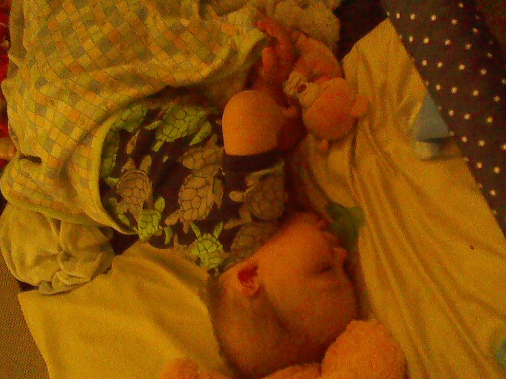
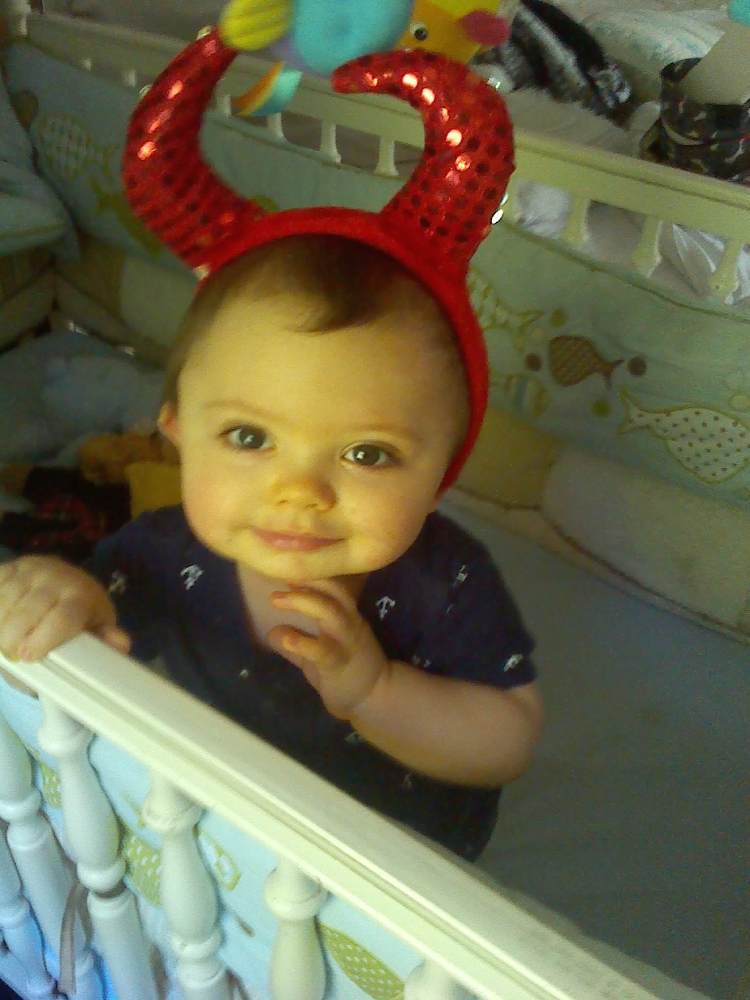

Images of Sebastian
Image Without a Caption
Image With A Caption
Sweet, little Sebastian poses for the camera.
Multiple Images With One Caption
 
How can such a sweet, sleeping angel become the little, horned baby?